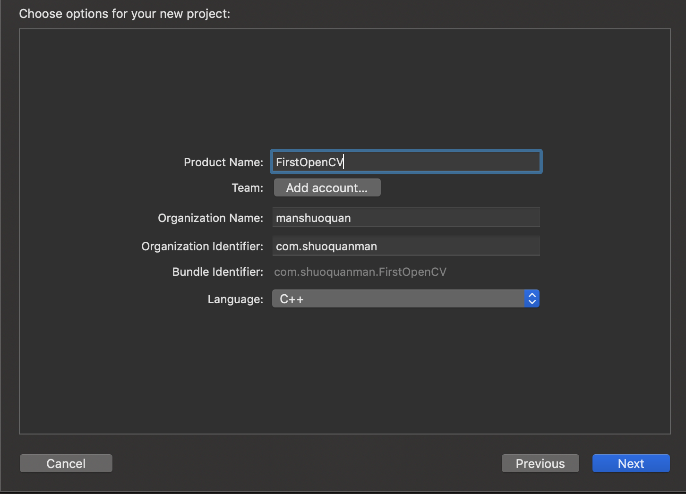
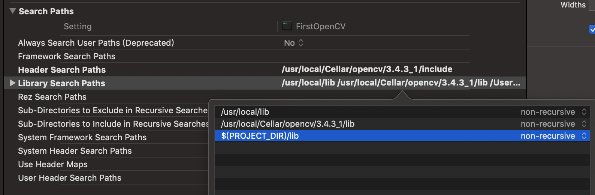

“我们的目标是星辰大海”
计算机视觉
计算机视觉是指用摄影机和电脑代替人眼对目标进行识别、跟踪和测量等机器视觉，并进一步做图形处理，使电脑处理成为更适合人眼观察或传送给仪器检测的图像。它可以将静止的图像或者视频数据转换为一种决策或者新的表示，简而言之，这就是一门指导机器如何“看”的技术。
计算机视觉既是工程领域，也是科学领域中的一个富有挑战性重要研究领域。计算机视觉是一门综合性的学科，视觉是各个应用领域，如制造业、检验、文档分析、医疗诊断，和军事等领域中各种智能/自主系统中不可分割的一部分。
OpenCV
OpenCV是一个开源的计算机视觉库，它采用C和C++进行编写。可以在Windows、Linux、Mac OS X等系统运行，另外也提供了Python、Ruby、MATLAB等语言的接口，实现了图像处理和计算机视觉方面的很多通用算法。
OpenCV用于进行高效计算，强调实时性的应用开发，可以享受多核处理器的优势，另外也提供了收费的性能基元库（IPP）可以应用英特尔架构上的自动优化。
在不断的迭代的过程中，OpenCV提供了500多个累积了API，个人理解OpenCV其实是一个算法集合或者是算法库，像是一个兵器库，而我们的的学习就是要掌握这“十八般兵刃”的使用方法。
2018年底，OpenCV已经更新到4.0.0版本，官方网址是https://opencv.org。
OpenCV的宗旨是促进商业和研究，它是开源免费的，它采用BSD开源证书，也就是说可以自由的使用，修改源代码，也可以将修改后的代码作为开源或者专有软件再发布。
下载和安装OpenCV
笔者使用Mac OS X系统进行开发，所以除非特别说明，这个系列的文章全部在Mac+Xcode环境下进行开发，OpenCV采用Git作为版本管理工具，使用Cmake来构建工程（关于Cmake，是一个庞大的话题，本博将开另外一个专栏详细介绍），一般情况下，你可以直接使用编译好的库直接进行开发，但是当你需要自己修改OpenCV时，你就需要详细了解它的编译方法了，不过这部分我们放在专栏的靠后部分再详细介绍。
首先需要进行一些环境配置，下载和配置Homebrew，homebrew是一款Mac OS平台下的软件包管理工具，可以安装卸载和更新软件包的功能，关于Homebrew的安装和使用可以参考这篇文章Homebrew 的安装和使用
第二步要下载OpenCV，可以通过github下载最新版，也可以去官方网站下载稳定版本，更方便的方法是使用Homebrew下载，在终端中使用“brew install opencv”命令安装OpenCV，目前安装的是3.4.3_1版本。
然后就是在Xcode中新建一个命令行C++项目，如图所示:

新建完项目，就需要在项目配置中的“building Settings”中的“Search Paths”中的“Header Search Paths”和“Library Search Paths”中配置引用路径，如图所示：

然后把OpenCV目录下的lib文件目录复制到项目下并导入即可，这个过程可能会在编译中报对应的库的错误，这个库可能是软链接过去的，把它删掉即可
最后在main中编写测试代码，测试代码如下：
` `
#include <stdio.h>
#include <opencv2/opencv.hpp>
using namespace cv;
int main()
{
Mat image = imread("956576417.jpg");// 测试图片路径
if ( !image.data )
{
printf("No image data \n");
return -1;
}
namedWindow("Display Image", WINDOW_AUTOSIZE );
imshow("Display Image", image);
waitKey(0);
return 0;
} ` ` 下一篇将介绍OpenCV中的数据结构和它们的使用方式。